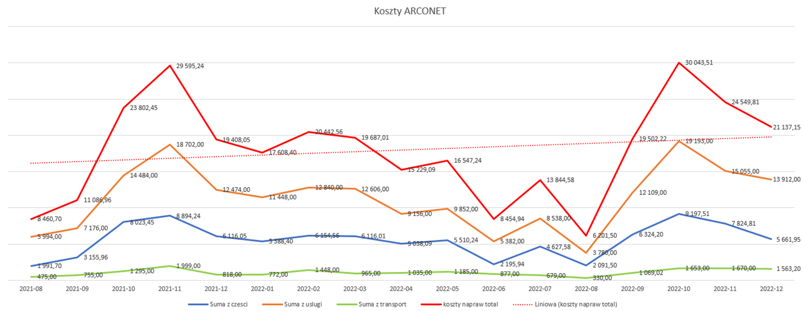

Kontrola Jakości
6 badań zakończonych akceptacją warunkową spowodowaną zapaleniem bibułki.
4 badania zakończone wynikiem: PALNE w wyniku czego wycofano z produkcji partię:
OBTM6S RH produkcji z dnia 12.12.2022 - 517 sztuk
OBTM15S RH produkcji z dnia 20.12.2022 - 300 sztuk
OBTM15S LH produkcji z dnia 21.12.2022 - 200 sztuk
OBTM7S RH produkcji z dnia 13.12.2022 - 22 sztuki
W poniższej tabeli to co widnieje na magazynie RREKL - są to reklamacje, które oczekują na weryfikację i zgłoszenie do dostawców.

PIMET - 2449,92 PLN - Towar wymieniony na nowy
AKTUALNE PODSUMOWANIE WARTOŚCI MAGAZYNÓW REKLAMACYJNYCH

Obecny wzrost wartości magazynów reklamacyjnych o 12 109,66 PLN względem ubiegłego tygodnia spowodowany dużą ilością reklamacji z produkcji (Filtry, szyby, żarówki) a ponadto zareklamowane palne plastiki z PIMET.
Progres: max 20 tyś na wszystkich magazynach na koniec I kwartału 2023 i towar do zgłoszenia na magazynie RREKL nie dłużej niż 2 tygodnie.
Aby zrealizować powyższe założenia konieczna jest reorganizacja obsługi serwisu zajmująca większość czasu pracy. – temat do omówienia z przełożonymi i działem sprzedaży.
| LIUDMILA | 19.gru | 20.gru | 21.gru | 22.gru | 23.gru | Suma | Uwagi |
|---|---|---|---|---|---|---|---|
| Szyby | NIEOBECNA | 5,00 | 3,00 | 2,75 | 2,50 | 13,25 | Sprawdzone 596 szyb (średnia: 80 sek/szt) |
| Przegląd reklamacji z produkcji | 0,50 | 0,50 | |||||
| Marcopol | 0,50 | 0,75 | 2,25 | ||||
| Cięcie | 2,25 | 2,25 | |||||
| Inspekcja okapów | 4,00 | 2,00 | 2,00 | 8,00 | |||
| Testy palności | 1,50 | 3,00 | 3,25 | 7,75 | |||
| Przerwa | 0,50 | 0,50 | 0,25 | 0,25 | 1,50 | ||
| SUMA | 10,00 | 10,00 | 8,00 | 8,00 | 36,00 |

 Miesiąc grudzień zamknięty z ilością 74 zgłoszeń.
Koszt serwisu: 21 137,15 PLN netto
Średni koszt jednego zgłoszenia: 285,64 PLN netto
Średni czas naprawy: 19 dni – spowodowany m.in. długim czasem wysyłki części serwisowych z MAAN